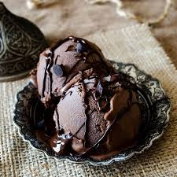

Rich Chocolate Ice Cream

Ingredients
- 2 cups heavy cream
- 1 cup whole milk
- 3/4 cup granulated sugar
- 3/4 cup unsweetened cocoa powder
- 4 large egg yolks
- 1 teaspoon vanilla extract
- 1/4 teaspoon salt
Instructions
- In a saucepan, combine heavy cream, whole milk, granulated sugar, and cocoa powder. Heat over medium heat, stirring constantly, until the mixture comes to a simmer.
- In a separate bowl, whisk together egg yolks. Gradually pour about 1 cup of the hot cream mixture into the egg yolks, whisking constantly, to temper the eggs.
- Pour the egg mixture back into the saucepan with the remaining cream mixture. Cook over medium heat, stirring constantly, until the mixture thickens slightly and coats the back of a spoon.
- Remove from heat and stir in vanilla extract and salt. Strain the mixture through a fine-mesh sieve into a clean bowl to remove any lumps.
- Cover the bowl with plastic wrap, pressing the wrap directly onto the surface of the custard to prevent a skin from forming. Chill in the refrigerator for at least 4 hours or overnight.
- Churn the chilled custard in an ice cream maker according to the manufacturer's instructions until it reaches a soft-serve consistency.
- Transfer the churned ice cream to a freezer-safe container and freeze for at least 4 hours or until firm.
- Scoop and enjoy your rich chocolate ice cream!
Enjoy your ice cream!